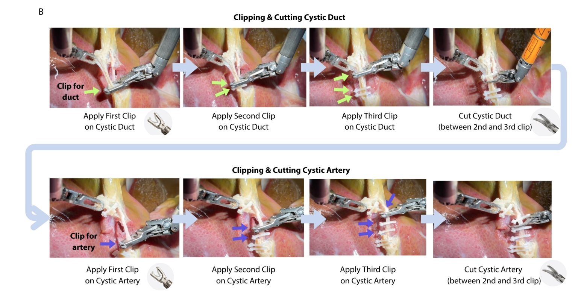
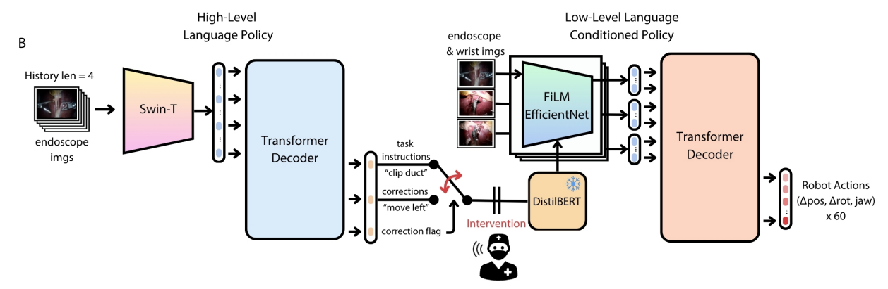
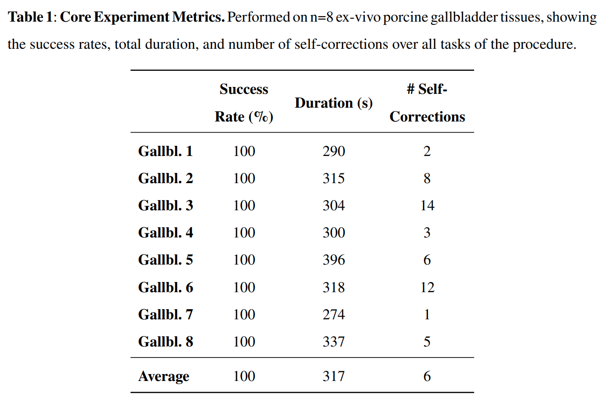
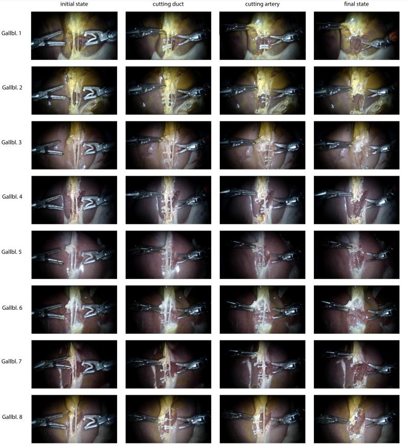
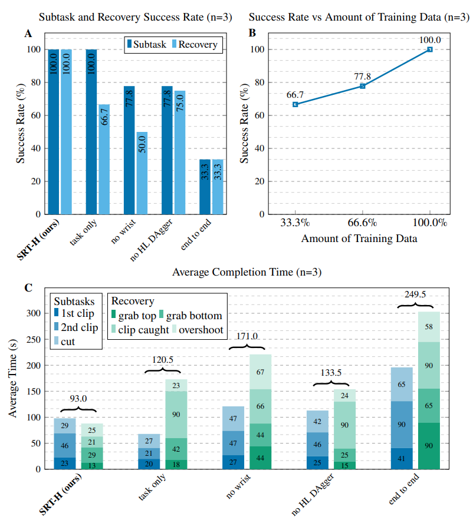

Ji Woong (Brian) Kim1,2, Juo-Tung Chen1, Pascal Hansen1, Lucy X. Shi2, Antony Goldenberg1, Samuel Schmidgall1, Paul Maria Scheikl1, Anton Deguet1, Brandon M. White1, De Ru Tsai3, Richard Cha3, Jeffrey Jopling1, Chelsea Finn2, Axel Krieger1*
1Johns Hopkins University, 2Stanford University, 3Optosurgical
Research on autonomous surgery has largely focused on simple task automation in controlled environments. However, real-world surgical applications demand dexterous manipulation over extended durations and robust generalization to the inherent variability of human tissue. These challenges remain difficult to address using existing logic-based or conventional end-to-end learning strategies. To address this gap, we propose a hierarchical framework for performing dexterous, long-horizon surgical steps. Our approach utilizes a high-level policy for task planning and a low-level policy for generating robot trajectories. The high-level planner plans in language space, generating task-level or corrective instructions that guide the robot through the long-horizon steps and help the low-level policy recover from its mistakes. We validate our framework through ex vivo experiments on cholecystectomy, a commonly-practiced minimally invasive procedure, and conduct ablation studies to evaluate key components of the system. Our method achieves a 100% success rate across n=8 different ex vivo gallbladders, operating fully autonomously without human intervention. The hierarchical approach improves the policy's ability to recover from suboptimal states that are inevitable in the highly dynamic environment of realistic surgical applications. This work demonstrates step-level autonomy in a surgical procedure, marking a milestone toward clinical deployment of autonomous surgical systems.
Sound on!
Cholecystectomy (gallbladder removal procedure) performed on a pig gallbladder, 14x speed
Da Vinci endoscope view, 5x speed
Red dye was used to simulate blood. The model was not trained on this appearance but still performed well. 10x speed.
The clip applier mistakenly targets both tubes, but the language policy corrects it to clip only one. 5x speed.
The clip applier overshoots and misses the target, but the language policy corrects it. 5x speed.
The grasping tool misses to grab the gallbladder, but the language policy corrects it. 5x speed.
In this work, we explore how to enable autonomous surgery in realistic, clinically relevant scenarios. Unlike isolated tasks, real surgical procedures unfold over long durations and involve a sequence of interdependent subtasks. For the overall procedure to succeed, each component task must be executed successfully, meaning the probability of failure increases with procedure length. This compounding challenge is one of the key difficulties in scaling autonomous surgical systems to real-world use.
Also, no robot learning system is perfect. They can and do make mistakes. Rather than trying to eliminate every possible error, we believe it’s important to build systems that can handle small, non-critical mistakes and recover from them effectively. Building in recovery mechanisms is a crucial step toward ensuring reliability in extended procedures.
Additionally, we emphasize the importance of human steerability: autonomous systems should remain easy to intervene in and guide, especially when unexpected situations arise. Simple and intuitive interfaces are important, such as the ability to provide corrective feedback through spoken language. Ideally, these moments of human intervention should serve as learning opportunities, helping the system to continually improve through time.In our work, we aim to integrate the above elements through a hierarchical end-to-end approach, which we refer to as Hierarchical Surgical Robot Transformer (SRT-H). We demonstrate our findings by tackling a complex surgical step, cholecystectomy. Cholecystectomy is a gallbladder removal procedure that is performed approximately 700,000 times a year in the US alone. It is also the first surgery that was performed laparascopically. We focus on the clipping and cutting portions of cholecystectomy, as shown below.
As illustrated below, our policy is composed of a high-level language policy and a low-level policy for generating robot trajectories. The high-level policy outputs both a task instruction and a corrective instruction, along with a correction flag. Task instructions describe the primary objective to be executed, while corrective instructions provide fine-grained guidance for recovering from suboptimal states. Examples include "move the left gripper closer to me" or "move the right gripper away from me." The low-level policy takes as input only one of the two instructions, determined by the correction flag. When the flag is set to true, the system uses the corrective instruction; otherwise, it relies on the task instruction.
To support this training framework, we collect two types of demonstrations. The first consists of standard demonstrations captured during normal task execution. The second consists of corrective demonstrations, in which the data collector intentionally places the robot in failure states, such as missing a grasp or misaligning the grippers, and then demonstrates how to recover and complete the task successfully. These two types of data are organized into separate folders: one for regular demonstrations and another for recovery demonstrations. During training, the correction flag is set to false when using regular data and true when using recovery data, allowing the policy to learn context-appropriate behaviors based on the state of the system.
We collect approximately 18,000 demonstrations across >30 pig gallbladders and train our SRT-H policy. The policy was then deployed on 8 unseen pig gallbladders, and the resulting success rate, time duration, and number of corrective behaviors are shown below. The before and after images of performing cholecystectomy are also shown.
 We also perform ablative experiments to evaluate the importance of each design choice of SRT-H. In particular, we evaluate SRT-H without corrective instructions (task only), no wrist cameras (no wrist), without online language fine-tuning (no HL Dagger), and without the hierarchical structure (end-to-end). We evaluate these models on their success rate, total duration, and their ability to recover from suboptimal states.
We encourage the readers to check out the paper for more details on the results.
@inproceedings{,
author = {},
title = {},
year = {},
}